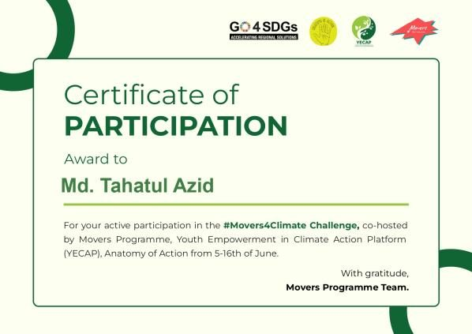

FIELDNOTES / 07
HONOURS / MILESTONES
Work worth celebrating.
Awards, civic leadership, skills development and certificates from the portfolio.
SCROLL TO EXPLORE↓
Awards
- 2nd place, Smart Village Project Competition, RUET2023
- 2nd place, Project Display (eco-friendly campus), 8th National Nature Summit2017
- General Grade Scholarship for HSC results, Dhaka Education BoardHSC
- #Movers4Climate Pioneer, Movers Programme & UNDP YECAPClimate
- Certificate of Appreciation ×2, National Writing Competition on post-COVID recovery (YouthOpportunities & IPDC)2020
Competitions entered
- National STEAM Olympiad, iTesseract2024
- World Town Planning Day Poster Competition, URP, RUET2023
- World Health Day Quiz, Youth School of Health & Hygiene2021
- Essay Competition, RYC Global2020
- 11th National Undergraduate Mathematics Olympiad2019
- Biology Olympiad, Kaler Kantho2017
- 7th National Nature Summit2016
Volunteering & leadership
Dec 2019 – May 2024
Transparency International Bangladesh, Rajshahi
YES Friend, then YES member with the Committee of Concerned Citizens. Campaigns, RTI desks, data collection, seminars, and the Oct 2023 CCC–YES meeting with the British High Commissioner. Certificate of Experience issued July 2024.
Climate
Movers4Climate Pioneer
Completed the Movers4Climate Challenge with the Movers Programme and UNDP's Youth Empowerment in Climate Action Platform: 10 climate actions and a network of young climate advocates across Asia and the Pacific.
Dec 2019 – Jun 2020
Divisional Coordinator, Save the Student
Student skill programmes and events across Rajshahi Division.
2016 – 2021
Clubs
Photographic Society of RUET (2019–2021) and Notre Dame Nature Study Club (2016–2017).




Training
- Training of Master Trainer on Citizen-Led Assessment, WAVE Foundation2022
- Training of Facilitator on Citizen-Led Assessment, WAVE Foundation2022
- Active Citizens Youth Leadership Training, British Council & The Hunger Project2021
- Workshop on Advanced Software for ICT, IICT-RUET & IEEE RUET SB2021
- Spoken English Proficiency, Speakers Council Chattogram2016
Courses & certificates
- Mapping and Spatial Analysis with ArcGIS, BohubrihiDec 2024
- Data Analysis with SPSS, BohubrihiDec 2024
- Complete Course on ArcGIS, Interactive CaresNov 2024
- Full Course on AutoCAD, Interactive CaresNov 2024
- The Art of Public Speaking, BYLCx2022
- A Pathway to Erasmus+, RUET Career Forum2021
- Writing Professional Emails, BYLCx2021
- Professional Online Video Editing, UY Lab2021
- Public Speaking Fundamentals · Email Etiquette · Microsoft Excel Basics, 10 Minute School & Muktopaath—
- Multimedia Content Development · Digital Security Essentials, Muktopaath2020
- Photography Workshop, Pixmama2019